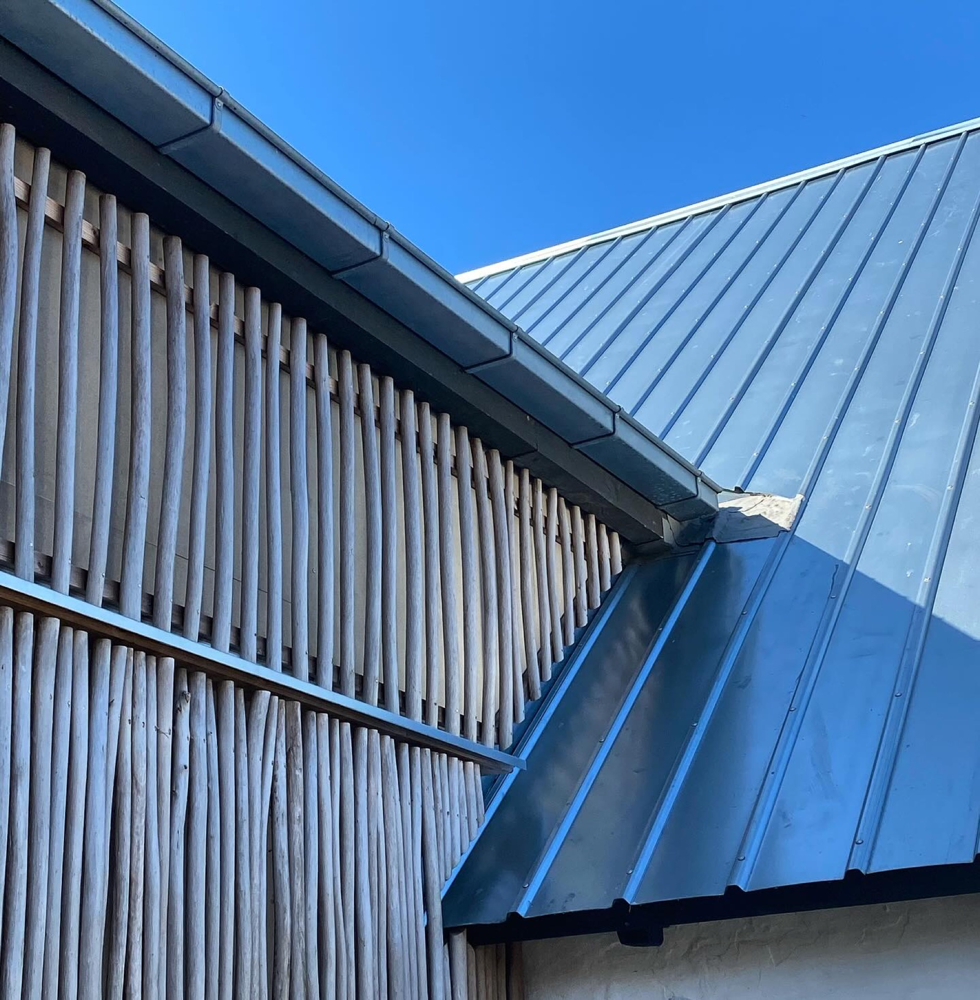
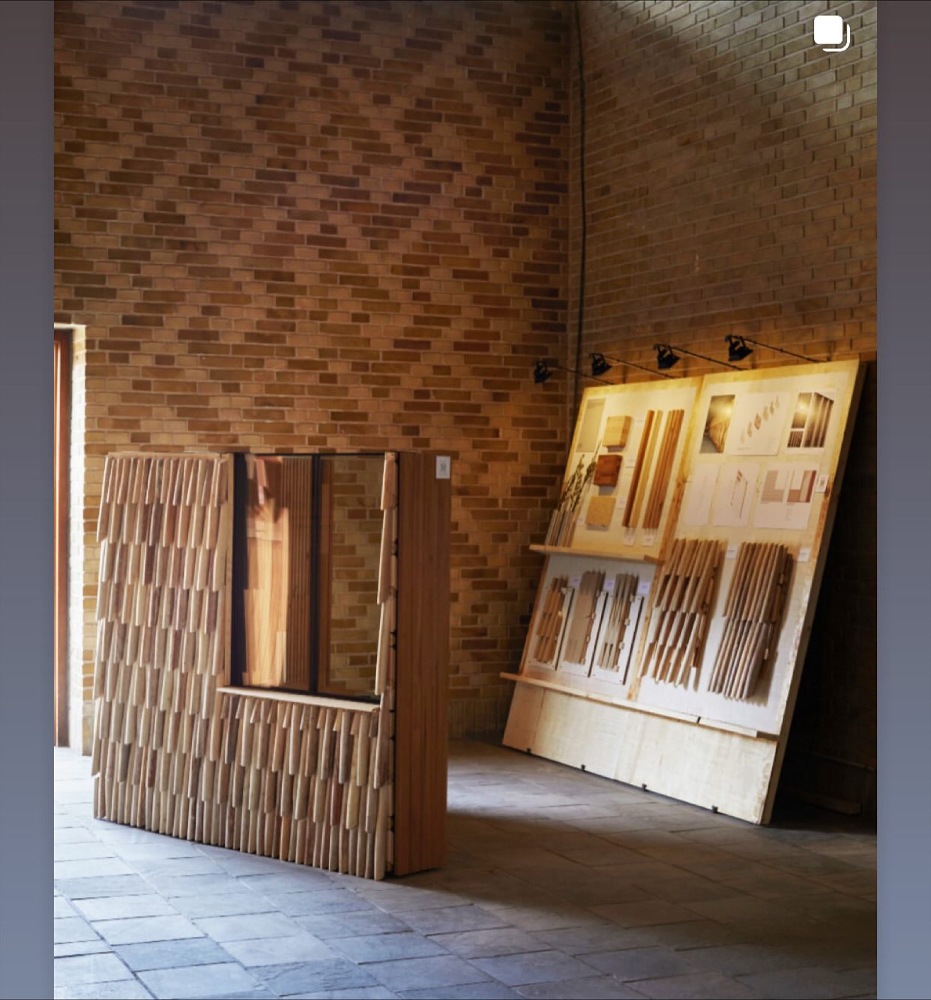
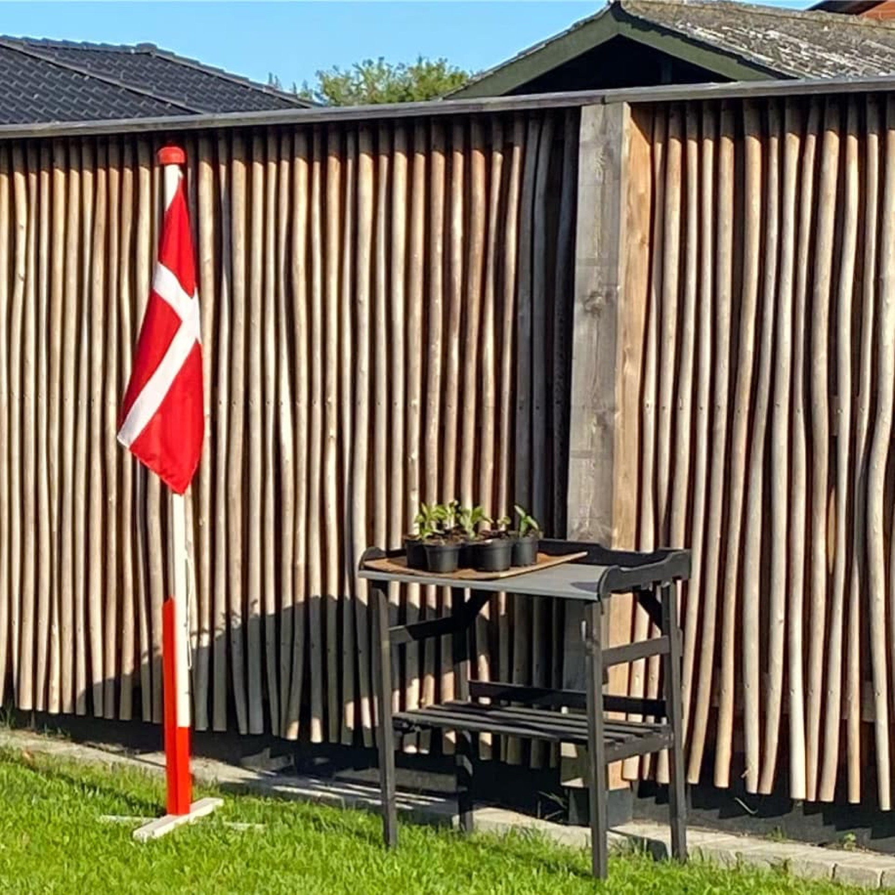
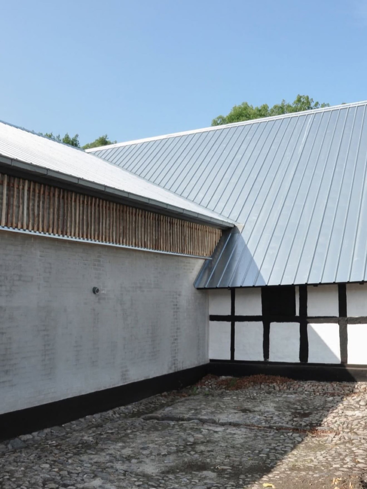
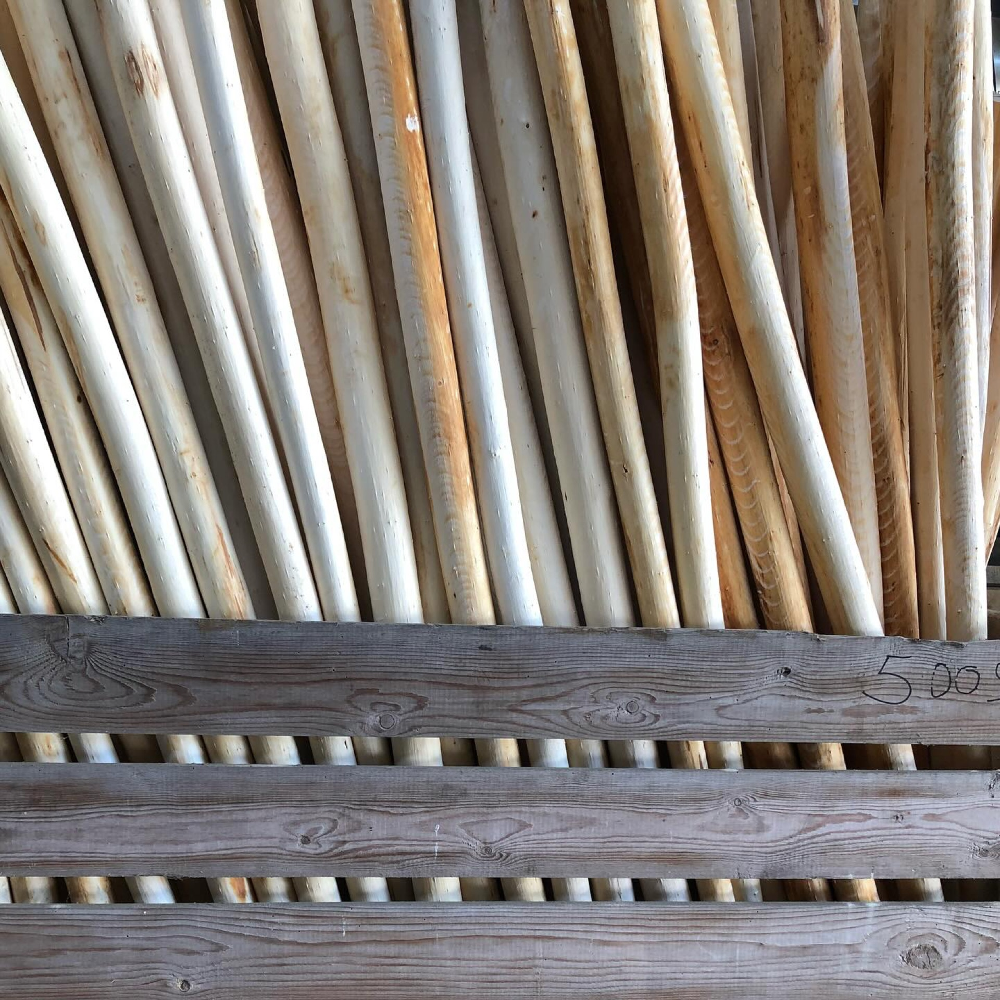
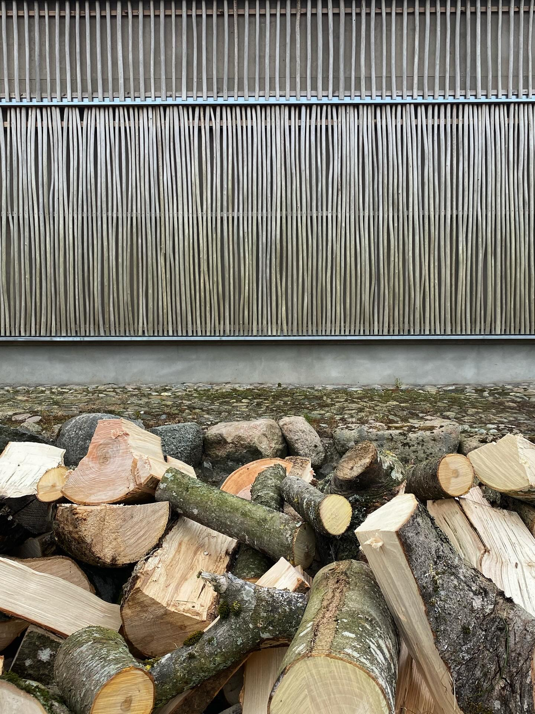

Sortir du catalogue.
Signer son projet.
Quand le projet exige plus qu'un produit catalogue : bardages haut de gamme, façades signature, écrans architecturaux, intégration du saule dans vos produits manufacturés existants.
Trois ingrédients : le saule, votre vision, notre savoir-faire.
Chaque projet signature est unique. Voici comment on travaille avec les architectes, designers et donneurs d'ouvrage qui veulent un objet signé.
Conception spécifique
Pas de catalogue figé. Hauteur, espacement, finition, courbe, intégration aux structures existantes : on dessine pour votre projet, pas l'inverse.
Matériaux et finition d'exception
Saule sélectionné, posé à la main, finitions soignées. Le rendu final reflète le niveau d'exigence d'un projet d'architecture signée.
Intégration à vos produits manufacturés
Le saule s'intègre à vos systèmes constructifs existants : structures métalliques, bardages, mobilier urbain, panneaux acoustiques. On travaille en partenariat avec vos fournisseurs.
Des réalisations qui se distinguent.
Bardages, façades, intégrations architecturales : aperçu de projets signatures réalisés en collaboration avec architectes et designers, principalement issus de notre savoir-faire scandinave (Pilebyg).






Quand le standard ne suffit plus.
Les projets signatures s'adressent à ceux qui pensent l'écran ou la clôture comme un objet architectural à part entière.
Pour vos projets à signature visuelle
Pavillons, centres d'accueil, bâtiments institutionnels, résidences haut de gamme — partout où l'écran fait partie du concept architectural.
Pour vos installations sur mesure
Mobilier urbain, panneaux d'art public, scénographies, expositions — le saule comme matière de design plutôt que produit.
Pour intégrer le saule à votre offre
Vous fabriquez des structures métalliques, des panneaux acoustiques, du mobilier urbain ? Nous fournissons et intégrons le saule dans vos produits.
Pour vos résidences et propriétés
Aménagements résidentiels haut de gamme, jardins signature, écrans visuels personnalisés. Une matière noble pour les propriétés qui marquent.